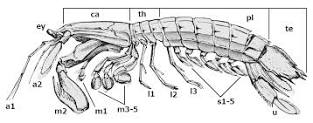

Fatos sobre o Stomatopoda
Possuem uma visão incrível
Possuem um soco poderoso
São exclusivamente carnívoros
O segundo par de patas é muito desenvolvido
Informações Gerais
Os camarões-mantis, também conhecidos como Stomatopoda (nome científico: Odontodactylus scyllarus) constituem uma ordem distinta de crustáceos marinhos pertencentes ao grupo Malacostraca. Esses animais apresentam uma anatomia singular, sendo mais notáveis por suas garras extremamente desenvolvidas, as quais se assemelham à posição de prece de uma louva-a-deus, daí o nome. Com cerca de 450 espécies conhecidas, os camarões-mantis habitam uma variedade de ambientes marinhos, desde águas rasas até profundezas consideráveis, frequentemente encontrados em recifes de coral, fundos arenosos e lama.
Seu comportamento predatório é impressionante, caracterizado por suas garras especializadas que efetuam golpes rápidos e poderosos para capturar presas, muitas vezes com a força suficiente para gerar bolhas de cavitação. A maioria das espécies possui olhos complexos e altamente desenvolvidos para localizar suas vítimas. O ciclo de vida dos camarões-mantis envolve metamorfose e múltiplas fases larvais, culminando na forma adulta. A reprodução ocorre internamente, e algumas espécies praticam o cuidado parental, onde as fêmeas protegem os ovos até a eclosão.
A diversidade de cores e padrões exibidos por esses crustáceos é notável, frequentemente ajudando-os na camuflagem e no mimetismo com seu ambiente. Seu papel ecológico é significativo, já que atuam como predadores que controlam as populações de pequenos peixes e outros crustáceos, contribuindo para o equilíbrio dos ecossistemas marinhos. Devido à sua anatomia única e comportamento intrigante, os camarões-mantis têm sido alvo de estudos científicos abrangentes, não apenas para entender a biologia marinha, mas também para inspirar inovações na área da engenharia biomimética. Em resumo, esses crustáceos cativantes desempenham um papel vital nos oceanos, continuando a estimular a curiosidade e interesse de cientistas e entusiastas da vida marinha.
| Categoria | Nome |
|---|---|
| Reino | Animalia |
| Filo | Arthropoda |
| Subfilo | Crustacea |
| Classe | Malacostraca |
| Subclasse | Hoplocarida |
| Ordem | Stomatopoda |
Possuem uma visão incrível
Os camarões-mantis, também conhecidos como Stomatopoda, possuem uma visão verdadeiramente notável. Seus olhos são altamente desenvolvidos e adaptados para detectar movimentos e cores de forma extraordinária. Cada olho é composto por três partes principais: uma parte que vê cores, outra que percebe a polarização da luz e uma terceira que rastreia os movimentos. Essa combinação de características permite que esses crustáceos localizem presas em potencial com precisão impressionante e também se protejam de predadores. Sua visão sofisticada desempenha um papel crucial em suas habilidades predatórias e no reconhecimento do ambiente marinho complexo em que vivem.
Possuem um soco poderoso

Os camarões-mantis são conhecidos por possuírem um soco verdadeiramente poderoso, uma habilidade que os torna predadores formidáveis nos ecossistemas marinhos. Suas garras dianteiras são altamente especializadas para executar golpes rápidos e precisos, capazes de subjugar presas e se defender de ameaças. Esses socos são executados com uma velocidade incrível, muitas vezes gerando bolhas de cavitação e impactos fortes o suficiente para romper a concha de suas presas ou afastar potenciais predadores. Essa estratégia única de caça e defesa demonstra a adaptação engenhosa dos camarões-mantis ao ambiente marinho e destaca sua posição como mestres do combate subaquático.
São exclusivamente carnívoros
Sim, os camarões-mantis são exclusivamente carnívoros, o que significa que sua dieta consiste inteiramente de carne. Esses crustáceos marinhos são predadores especializados e altamente eficazes, caçando presas que variam de pequenos peixes a outros invertebrados marinhos. Sua estratégia de caça é notável, usando suas garras dianteiras altamente desenvolvidas para realizar golpes rápidos e precisos. Combinado com uma visão excepcionalmente aguçada, os camarões-mantis têm a capacidade de localizar, perseguir e capturar presas de maneira impressionante. Sua natureza carnívora desempenha um papel vital nos ecossistemas marinhos, ajudando a controlar as populações de outras espécies e contribuindo para a complexa teia da vida nos oceanos.
O segundo par de patas é muito desenvolvido
Os camarões-mantis apresentam um segundo par de patas altamente desenvolvido, que desempenha um papel crucial em suas habilidades de caça e na sua capacidade de interagir com o ambiente marinho. Essas patas modificadas, chamadas de "podos", são mais longas e mais robustas do que as patas regulares, conferindo-lhes uma aparência distinta. Os podos são utilizados para manipular presas capturadas, ajudar na locomoção e até mesmo para estabelecer interações sociais.Além disso, as patas podos têm cerdas sensoriais sensíveis que permitem ao camarão-mantis sentir o ambiente ao seu redor, detectando movimentos sutis na água e auxiliando na localização de presas e predadores. Essa adaptação única e multifuncional das patas podos é um exemplo notável de como os camarões-mantis evoluíram para maximizar sua eficiência como predadores e sobreviventes nos oceanos complexos em que habitam.